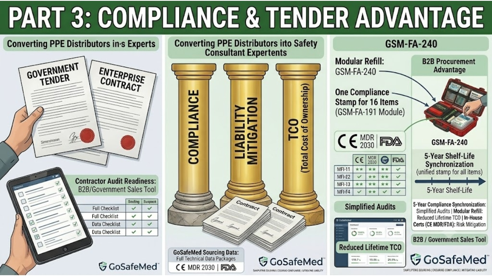

Securing the Contract: How Modular First Aid Refills Help PPE Distributors Win Enterprise and Government Tenders
MAY 27, 2026

For international PPE distributors and safety procurement panels, bidding on large-scale corporate or government supply tenders is rarely decided by product price alone. In enterprise sectors—such as maritime logistics, oil and gas extraction, municipal transit, and heavy manufacturing—the contract is won by the bidder who eliminates compliance liability and operational waste.
Traditional corporate first aid procurement relies on static, generic cabinets filled with over a hundred loose items. When a single high-use tool is spent or reaches its expiration stamp, the entire unit triggers a non-compliance flag during official safety inspections.
To win high-value, long-term tenders, distributors must shift the conversation from selling cheap individual commodities to delivering an engineered risk-mitigation framework. Implementing GoSafeMed’s action-based modular IFAK REFILL system provides the exact technical and financial leverage required to dominate corporate bidding sheets.
1. Mitigating Corporate Liability: Delivering Audit-Ready Compliance
Enterprise safety directors operate under strict occupational health frameworks like ANSI/ISEA Z308.1 Class B and international OHS guidelines. During sudden safety audits, tracking the independent shelf lives of loose items scattered across multiple facilities is an administrative nightmare.
- The Sourcing Liability: If a field audit reveals a first aid box contains expired respiratory or bleeding control supplies, the corporation faces heavy regulatory fines and massive legal liability in the event of a workplace casualty.
- The GoSafeMed Advantage: Our IFAK REFILL Module eliminates this corporate risk entirely. We synchronize the manufacturing cycles of all 16 critical trauma components into a single, factory-sealed block protected by a unified 5-year shelf-life warranty. When a safety auditor inspects a facility, they check one clear external date stamp on the module. Distributors can guarantee their clients 100% audit-readiness with zero tracking friction.
2. The Procurement Equation: Lowering the Total Cost of Ownership (TCO)
Enterprise procurement boards are strictly focused on the lifetime maintenance costs of safety equipment. They know that buying cheap initial kits often leads to skyrocketing replenishment costs down the road.
- Eliminating Whole-Kit Waste: In standard configurations, when critical items like the Compressed Gauze, Combat Tape, or protective Gloves are used during minor incidents, safety managers often discard the entire station or purchase an entirely new rigid hard box to ensure compliance. This creates massive capital waste on the corporate balance sheet.
- Precision Modular Refills: Distributors using GoSafeMed can pitch a highly persuasive, cost-saving financial model. The client retains their high-visibility outer hard cases (such as the GSM-FA-240) and only purchases the targeted IFAK REFILL Module on-demand. This precision replenishment system slashes long-term maintenance budgets, eliminates warehouse inventory bloat, and provides the distributor with a highly predictable, recurring contract revenue stream.
3. Passing Rigorous Tender Evaluations with Certified Trauma Hardware
When government or enterprise panels audit a tender submission, every high-stakes item inside the kit must withstand technical and regulatory scrutiny. Generic medical suppliers cannot provide the necessary data packages, leading to immediate disqualification.
GoSafeMed's module embeds verified, elite-grade trauma hardware directly into the tender layout:
- Advanced Airway Management: Instead of vague clinical descriptors, our module includes Dual Chest Seals (2 × Chest Seal) and a Nasal Airway & Lubricant. This specification guarantees the client can manage both entry and exit thoracic puncture wounds under the M.A.R.C.H. protocol—proving your tender submission is built for severe trauma, not just standard office cuts.
- Arterial Bleeding Control: We completely replace weak plastic alternatives with a premium Metal Tourniquet featuring a rigid aluminum windlass rod, paired with a heavy-duty Emergency Bandage 4" and an Aluminum Splint 18".
Every module is fully backed by CE MDR (valid through 2030), FDA Registration, and ISO 13485 certifications. We supply our distribution partners with the complete technical data packages, testing documentation, and flexible, project-based manufacturing required to pass complex corporate compliance boards seamlessly.
Tender Specifications Review: Executing a corporate or government safety bid? Contact our project desk to receive the complete 2026 GoSafeMed Technical Portfolio, compliance certification files, and bulk distributor tender pricing. Reply with CATALOG to streamline your supply chain footprint today.